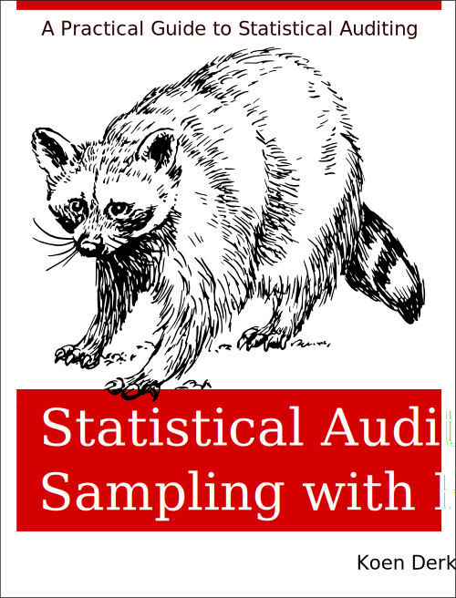

Statistical Audit Sampling with R
Koen Derks ![]()

Welcome
This book, Statistical Audit Sampling with R, is intended as a practical guide for auditors who wish to employ probability theory in their audit sampling activities. While the focus of this book is exclusively on audit sampling, it aims to discuss the topic from both the classical (frequentist) perspective and the Bayesian perspective. By examining the subject through these two lenses, the book explains the statistical theory behind commonly used audit sampling procedures and demonstrates how to perform these procedures in accordance with international auditing standards, using the jfa R package, in a statistically sound manner.